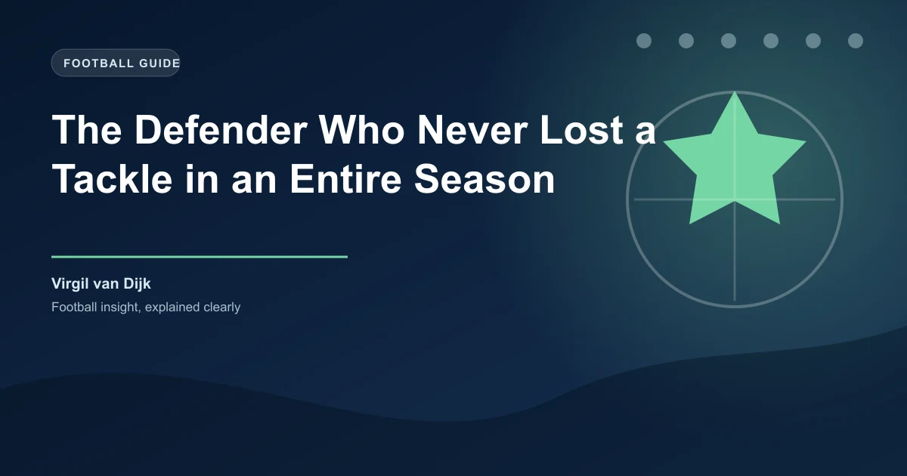

There is a statistic in football that sounds too absurd to be real. A Premier League defender played 38 league matches � against the best wingers and forwards in the world � and not a single opponent dribbled past him. Not once. No nutmegs, no body feints that left him trailing, no wingers who knocked the ball past him and ran onto it. For an entire season, Virgil van Dijk was simply impossible to beat in a one-on-one situation.
The 2018-19 Premier League season produced one of the most remarkable individual defensive campaigns in football history. Van Dijk, Liverpool's commanding centre-back, went all 38 league games without being dribbled past. The stat comes from Opta, who recorded every attempted dribble against him and logged zero successes. It was not just a streak � it was a statement that redefined how the world judged defending.
Key Stat: Virgil van Dijk went the entire 2018-19 Premier League season without being dribbled past. 38 games. Zero nutmegs. Zero successful take-ons. Zero.
Van Dijk's invincibility was not limited to the league. The streak extended across all competitions to 64 consecutive appearances. From December 2018 through early the next season, attackers tried and failed, match after match. Wingers sized him up, feinted, shifted the ball, and found nothing but a dead end. Strikers tried to spin him, bump him, or slip the ball through his legs � and every single time, Van Dijk's long legs, sharp reading of the game, and calm positioning snuffed out the threat.
What makes the record even more staggering is the quality of opposition he faced. In 2018-19, Van Dijk went up against Raheem Sterling, Sadio Man� in training, Pierre-Emerick Aubameyang, Alexandre Lacazette, Eden Hazard, Son Heung-min, and Marcus Rashford � all world-class dribblers. None of them got past him. Hazard, arguably the Premier League's best-ever dribbler, tried three times across two matches. All three attempts ended with Hazard turning back or losing the ball.
The Van Dijk Streak: 64 consecutive appearances across all competitions without being dribbled past. The run started in December 2018 and was only broken by Nicolas Pepe (Arsenal) in August 2019.
The secret was not blistering pace or reckless aggression. Van Dijk credited his one-on-one defending ability to street football in the Netherlands. Growing up, he played on concrete pitches and in small-sided games where dribblers were relentless. Those thousands of unsupervised battles taught him to stay patient, to read the attacker's hips and shoulders, and to never dive in.
At 1.93 metres tall, Van Dijk combined physical presence with a calmness that bordered on arrogance. He rarely committed to a tackle unless he was certain of winning the ball. Instead, he jockeyed, shepherded attackers into less dangerous areas, and used his long reach to poke the ball away without losing his balance. It was defending as an art form � controlled, intelligent, and relentless.
Van Dijk credits growing up on Dutch streets and concrete pitches for his 1v1 defending. Thousands of pick-up games taught him to read dribblers without diving in.
Van Dijk's arrival at Liverpool in January 2018 for �75 million was a record fee for a defender at the time. The price tag raised eyebrows, but by the end of the 2018-19 season, it looked like a bargain. Liverpool conceded just 22 goals in the 2018-19 Premier League campaign � a dramatic improvement from the 46 they had conceded in 2017-18. That 24-goal swing transformed a famously fragile defence into the stingiest in the league.
The impact went beyond raw numbers. Van Dijk organised the backline, marshalled the offside trap, and gave Alisson Becker the confidence to play out from the back. His partnership with Joe Gomez, and later Jo�l Matip, became the foundation Liverpool built their title challenge on. The Reds finished on 97 points that season � the highest total in Premier League history for a runner-up � and won the Champions League in Madrid, with Van Dijk named Man of the Match in the final.
| Season | Goals Conceded | Premier League Finish | Major Trophy |
|---|---|---|---|
| 2017-18 (pre Van Dijk) | 46 | 4th | UCL Final |
| 2018-19 | 22 | 2nd (97 pts) | Champions League |
| 2019-20 | 33 | 1st (99 pts) | Premier League |
Van Dijk's season was so dominant that he broke the mould for defensive recognition. He was named PFA Players' Player of the Year � the first defender to win the award since John Terry in 2005. The 14-year drought reflected how rarely defenders are celebrated in individual awards, but Van Dijk's case was undeniable.
He also finished runner-up for the Ballon d'Or in 2019, behind Lionel Messi. In any other year, a centre-back who went an entire season unbeaten in duels, won the Champions League, and captained his national team might have taken the trophy. Messi's extraordinary individual numbers edged him out, but Van Dijk's runner-up finish was the highest for a defender since Fabio Cannavaro won it in 2006.
Historic Recognition: First defender to win PFA Player of the Year since John Terry (2005). Runner-up for Ballon d'Or 2019 � the best finish by a defender since Cannavaro's 2006 win.
Every streak has to end, and Van Dijk's came in August 2019. Arsenal's Nicolas Pepe, the club's record signing, finally did what no one had managed in 64 games � he drove past the Dutchman in a Premier League match at Anfield. The moment was almost fitting: it took a �72 million winger at the peak of his powers to beat a �75 million defender at the peak of his.
Rather than a sign of decline, the end of the streak underscored just how extraordinary the run had been. Pepe's success was a product of persistence and a moment of brilliance, not a pattern. Van Dijk continued to be the Premier League's most dominant defender, though injuries would later slow his momentum. The 2018-19 season remains the gold standard for individual defensive performance in the modern game.
Van Dijk's legendary season is more than a trivia answer � it carries real lessons for football bettors. Defensive solidity is one of the most reliable indicators of match outcomes, and Van Dijk's impact on Liverpool's numbers was seismic. When a dominant centre-back is fit and in form, his team's clean sheet odds shorten significantly, and the under goals market becomes more attractive.
For bettors, tracking defensive consistency is crucial. A team with a rock-solid centre-back pairing facing a side that relies on individual dribbling (rather than team interplay) often produces value in the clean sheet and under 2.5 goals markets. Van Dijk's 2018-19 Liverpool are the ultimate case study: a defence so good that backing under 2.5 goals in their matches was profitable more often than not. When you spot a defender who dominates one-on-one situations the way Van Dijk did, the betting edge can last an entire campaign.
Betting Takeaway: Teams with elite individual defenders who dominate 1v1 situations tend to keep more clean sheets and produce fewer goals. Track defensive duels won and dribbled-past stats to find value in the under goals and clean sheet markets.
Virgil van Dijk's 2018-19 season was not just a statistical quirk � it was a masterclass in defending that may never be repeated. In an era where attacking statistics dominate headlines, a quiet Dutch centre-back spent an entire year proving that the best defence is the one opponents simply cannot get past.
Check our free daily football predictions for expert analysis on matches across Europe's top leagues.
Generate optimized accumulator combinations from today's AI-powered predictions. Set your target odds and get instant ticket suggestions.
Free Ticket Builder →